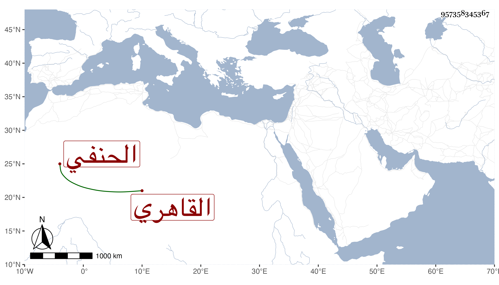

0902Sakhawi.DawLamic.ITO20230111-ara1.EIS1600.957358345367
Biography ID: 957358345367
31
محمد بن علي بن محمد بن عمر بن عبد الله ناصر الدين أبو الفضل بن العلاء القاهري الحنفي الماضي أبوه والآتي ولده الجلال محمد ويعرف بابن الردادي وهو بكنيته أشهر . نشأ فحفظ القرآن وكتبا واشتغل قليلا وقرأ على السراج قاري الهداية وابن مهنا ، وسمع من شيخنا وغيره ، ومما سمعه ختم البخاري في الظاهرية القديمة ومعه ولده ، وناب في القضاء دهرا تجملا واشتغل بالتجارة وذكر بمزيد الثروة مع توسط المعيشة وأقام منبر جامع الغمرى أول ما جدد وكرسيا للقراءة وربما ساعد فيه لمجاورته له . مات في خامس شوال سنة ستين عن أزيد من سبعين سنة ودفن بتربة سودون المغربي تجاه تربة كوكاى رحمه الله وعفا عنه .
